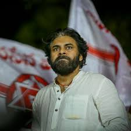
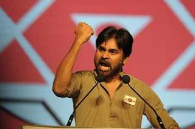
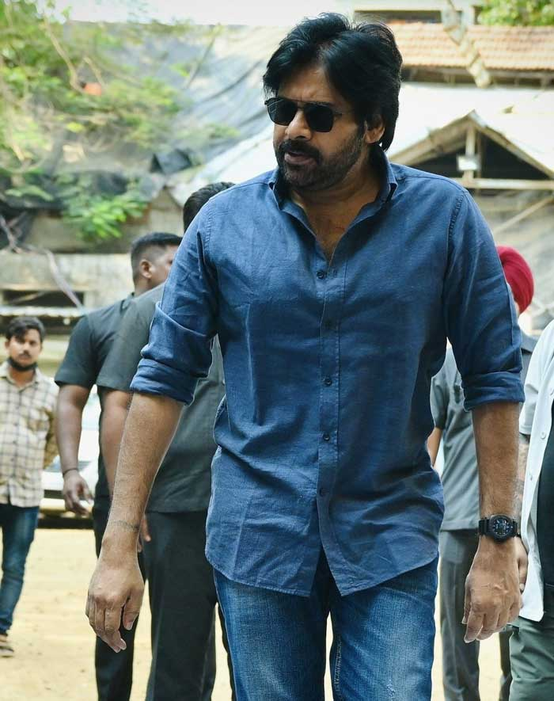
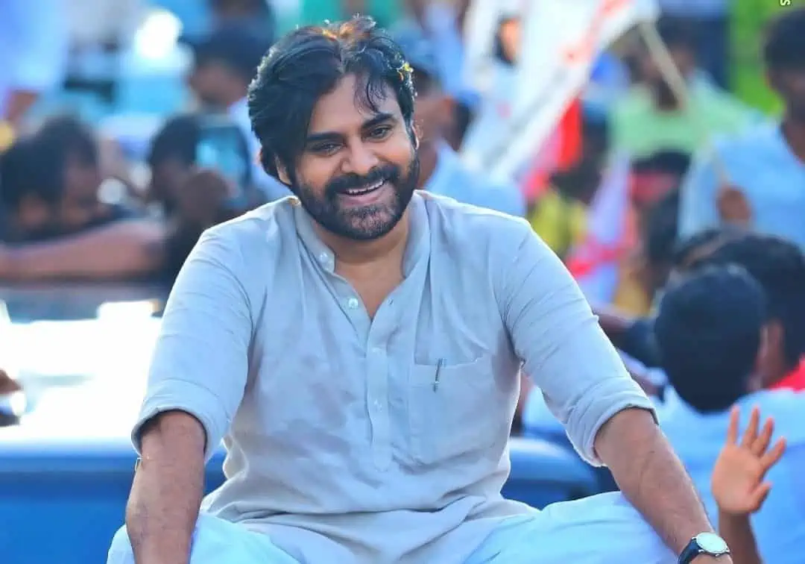
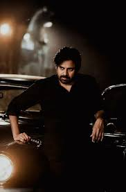

Pawan Kalyan is a popular Indian actor, social activist, and politician. He is widely known for his work in the Telugu film industry and his strong presence in politics. His real name is Konidela Kalyan Babu. Over the years he has built a huge fan base across India, especially in Andhra Pradesh and Telangana. Apart from cinema he has developed a reputation as a leader who raises important social and political issues. Pawan Kalyan entered politics with the goal of bringing change to society. He believes that politics should focus on serving people and solving their problems. In 2014 he founded the Jana Sena Party. The main aim of the party is to bring transparency, accountability, and honest leadership into governance. His speeches often focus on youth empowerment, farmers' welfare, employment opportunities, and development. Many young people admire him for his courage and straightforward style of speaking. Pawan Kalyan has often emphasized that political leaders should work for the welfare of the common people. Even though he became famous through films, he believes that his real purpose is public service. Through his political journey he continues to address the concerns of citizens and encourage public participation in democracy.He believes that leaders must work honestly for the benefit of society. Through his political journey he continues to encourage people to participate in democratic processes. He also emphasizes the importance of transparency and accountability in government. His popularity in cinema helped him reach millions of supporters quickly. Despite being a celebrity he tries to connect with people as a common citizen. His leadership style is known for its passion and emotional connection with the public. Today he remains an influential personality in both cinema and politics. Pawan Kalyan’s legacy is shaped by both his film career and his political journey. As an actor he inspired millions of fans with his performances and unique personality. As a political leader he continues to encourage people to participate actively in democracy. His vision focuses on creating a society where leadership is honest and responsible. Many young people see him as a role model because he speaks openly about social justice and equality. His political ideology emphasizes development, transparency, and citizen welfare.
Pawan Kalyan was born on 2 September 1971 in Bapatla in Andhra Pradesh. He belongs to a well-known family in the Telugu film industry. His elder brother is :contentReference[oaicite:1]{index=1}, one of the biggest actors in Telugu cinema. Growing up in a creative environment influenced Pawan Kalyan's personality. However he was known to be quiet and thoughtful during his childhood. He spent a lot of time reading books and learning about philosophy and social issues. He developed a strong interest in martial arts during his early years. His dedication helped him earn a black belt in karate. Martial arts helped him build discipline, strength, and focus. Although he later became a film star, he always showed interest in public welfare. He often discussed issues related to poverty, farmers, and youth problems. These ideas later influenced his decision to enter politics and work for society. His early life experiences helped shape his thinking and leadership style. They played an important role in shaping the values that guide his political journey today.This admiration slowly developed into a desire to participate in public service. His upbringing taught him the value of discipline, respect, and responsibility. These qualities later influenced his leadership style in politics. His early life played an important role in shaping his future career.He regularly interacts with citizens and listens to their concerns. His political campaigns highlight the issues faced by farmers and unemployed youth. He believes politics should focus on solving real problems faced by citizens. His party aims to promote ethical leadership in governance. Over time his political influence has grown steadily. Today he remains one of the most discussed political leaders in the state.His speeches often focus on youth empowerment, farmers' welfare, employment opportunities, and development. Many young people admire him for his courage and straightforward style of speaking. Pawan Kalyan has often emphasized that political leaders should work for the welfare of the common people. Even though he became famous through films, he believes that his real purpose is public service. Through his political journey he continues to address the concerns of citizens and encourage public participation in democracy.He believes that leaders must work honestly for the benefit of society. Through his political journey he continues to encourage people to participate in democratic processes. He also emphasizes the importance of transparency and accountability in government.





Pawan Kalyan officially entered politics in 2014 by establishing the Jana Sena Party. The formation of this party marked an important moment in Andhra Pradesh politics. His goal was to create a political movement that focused on honesty and public welfare. During the 2014 general elections he supported political alliances that promised development for Andhra Pradesh. His speeches during election campaigns attracted large crowds. Many people appreciated his bold views on corruption and governance. Pawan Kalyan has consistently spoken about the problems faced by farmers, unemployed youth, and middle-class families. He has also raised concerns about regional development and infrastructure. His political approach focuses on understanding the problems of people by directly visiting villages and towns. In the 2019 Andhra Pradesh Assembly elections he contested from two constituencies. Although he did not win, his party gained significant public attention. After the elections he continued to work actively for strengthening the party. Over the years the Jana Sena Party has gradually expanded its presence in Andhra Pradesh politics. Pawan Kalyan continues to hold public meetings and political campaigns to connect with people. His early life experiences helped shape his thinking and leadership style. They played an important role in shaping the values that guide his political journey today.This admiration slowly developed into a desire to participate in public service. His upbringing taught him the value of discipline, respect, and responsibility. These qualities later influenced his leadership style in politics. His early life played an important role in shaping his future career.He regularly interacts with citizens and listens to their concerns. His political campaigns highlight the issues faced by farmers and unemployed youth. He believes politics should focus on solving real problems faced by citizens. His party aims to promote ethical leadership in governance.
Pawan Kalyan has been involved in many political campaigns and social movements. One of his major activities is organizing public rallies where he discusses key issues affecting citizens. He has raised his voice on topics such as unemployment, farmers’ problems, and government accountability. Through his party he has demanded better policies for agriculture and rural development. Pawan Kalyan has also visited several villages to understand the difficulties faced by farmers. During these visits he interacts directly with citizens and listens to their concerns. He has been active in advocating transparency in governance. His speeches often highlight the importance of ethical leadership in politics. Apart from political meetings he also participates in public awareness programs. These programs focus on education, social responsibility, and youth participation in politics. Through these activities he continues to build a strong connection with the public.His political activities include protests, meetings, and awareness programs. He also supports social campaigns related to education and development. These activities strengthen his connection with the public. His dedication to public issues has earned him loyal supporters. He continues to expand his political movement across the state. Over the years the Jana Sena Party has gradually expanded its presence in Andhra Pradesh politics. Pawan Kalyan continues to hold public meetings and political campaigns to connect with people. His early life experiences helped shape his thinking and leadership style. They played an important role in shaping the values that guide his political journey today.This admiration slowly developed into a desire to participate in public service. His upbringing taught him the value of discipline, respect, and responsibility. These qualities later influenced his leadership style in politics.
Pawan Kalyan has received recognition for his work in cinema as well as his political efforts. As an actor he has won several awards for his performances in Telugu films. His films gained massive popularity among audiences. Because of his unique acting style he earned the title "Power Star" among fans. In politics he is respected for speaking openly about social issues. Many people appreciate his honesty and courage in raising public concerns. His supporters believe that he represents the voice of the common people. Through his speeches he encourages citizens to question injustice and demand better governance. Although political success takes time, he continues to work toward strengthening his party and political influence.His influence extends beyond cinema into public life. Many young people see him as an inspirational leader. His supporters believe he represents the voice of ordinary citizens. Through his political work he continues to gain recognition. His determination and dedication have strengthened his public image. Today he is recognized as both a film icon and political leader. Pawan Kalyan has also visited several villages to understand the difficulties faced by farmers. During these visits he interacts directly with citizens and listens to their concerns. He has been active in advocating transparency in governance. His speeches often highlight the importance of ethical leadership in politics. Apart from political meetings he also participates in public awareness programs. These programs focus on education, social responsibility, and youth participation in politics.
Pawan Kalyan’s legacy is shaped by both his film career and his political journey. As an actor he inspired millions of fans with his performances and unique personality. As a political leader he continues to encourage people to participate actively in democracy. His vision focuses on creating a society where leadership is honest and responsible. Many young people see him as a role model because he speaks openly about social justice and equality. His political ideology emphasizes development, transparency, and citizen welfare. Through the Jana Sena Party he aims to bring long-term reforms in governance. His supporters believe that his dedication and determination will help bring positive change in politics. Even today Pawan Kalyan continues to travel across Andhra Pradesh to meet people and understand their concerns. His commitment to public service continues to influence many young leaders and supporters. His journey reflects the idea that leadership should be focused on service, responsibility, and social change.His journey reflects the connection between public service and leadership. His influence continues to grow among younger generations. He remains a strong voice for social and political awareness. His legacy continues to shape discussions about politics and leadership in Andhra Pradesh.Although political success takes time, he continues to work toward strengthening his party and political influence.His influence extends beyond cinema into public life. Many young people see him as an inspirational leader. His supporters believe he represents the voice of ordinary citizens. Through his political work he continues to gain recognition. His determination and dedication have strengthened his public image. Today he is recognized as both a film icon and political leader. Pawan Kalyan has also visited several villages to understand the difficulties faced by farmers. During these visits he interacts directly with citizens and listens to their concerns.